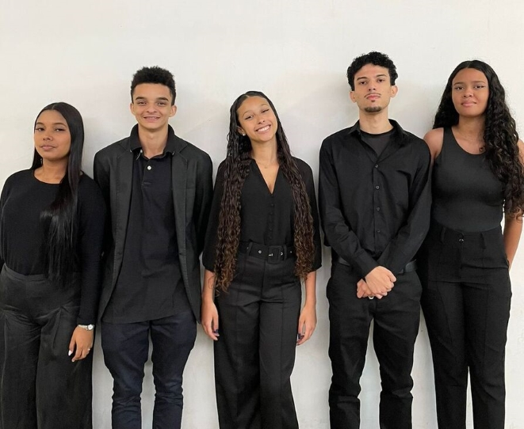

Sobre nós
Cinco técnicos desenvolvendo uma plataforma de telemedicina, em parceria com um hospital privado, para facilitar o acesso à saúde. Nosso site conecta pacientes e profissionais de forma prática e segura, permitindo agendamentos e acompanhamentos remotos, trazendo mais comodidade e eficiência ao cotidiano das pessoas.
